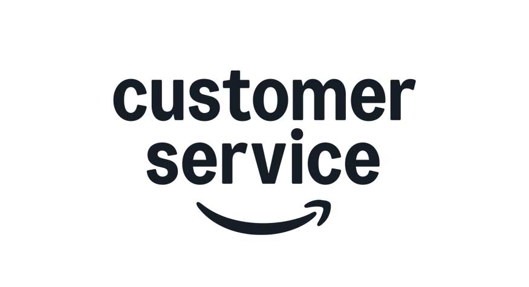

★ Featured
AI-Powered Support & Conversational UX (Amazon)
Role: Lead Product Designer
Led UX for AI-driven support across chat and voice, designing workflows that help customers resolve high-stress issues with clarity and trust.
Conversational UX
AI Support
Enterprise Scale